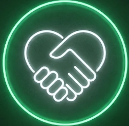
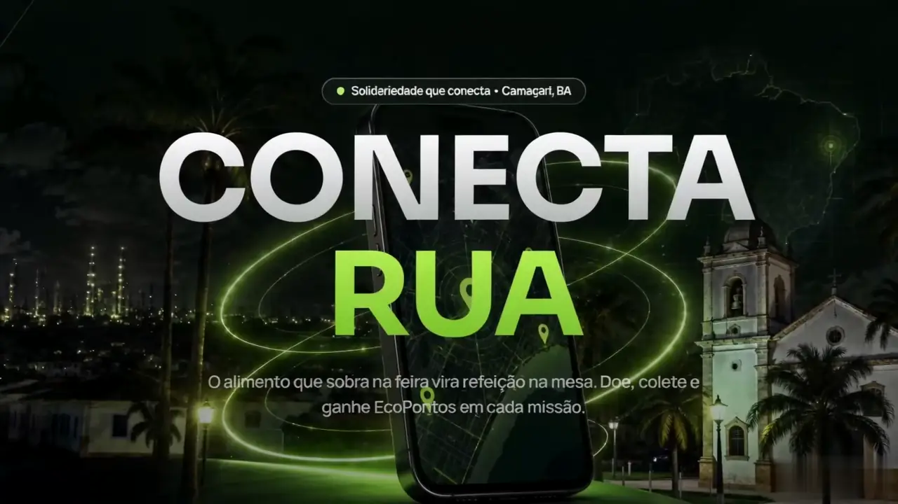
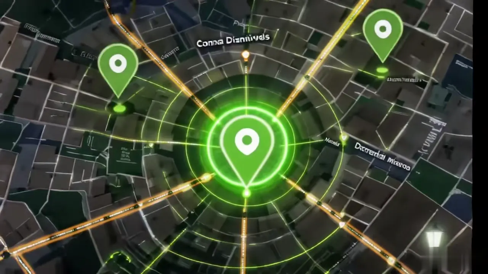
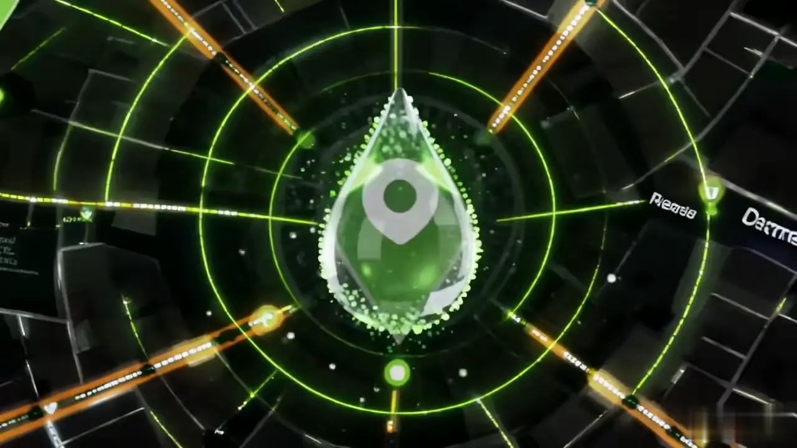
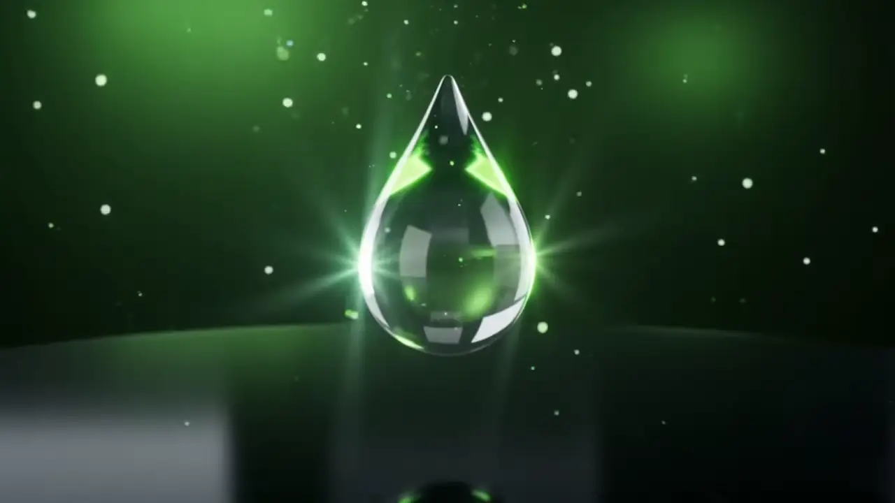

Conecta Rua
O alimento que sobra na feira vira refeição na mesa. Doe, colete e ganhe EcoPontos em cada missão.
3.482 kg resgatados esta semana
860 voluntários ativos
Conecta-Rua
0%

Conecta-Rua EntrarO alimento que sobra na feira vira refeição na mesa. Doe, colete e ganhe EcoPontos em cada missão.
Todos os dias, feiras e hortifrútis descartam alimentos em bom estado porque não há quem colete a tempo. Não é falta de doadores: é falta de rota, aviso e confiança.
Tipo de alimento, quantidade e confirmar. A doação entra no mapa na hora e fica visível para voluntários e ONGs da região.
Voluntários veem distância, peso e prazo de cada coleta. A ONG recebe alimentos frescos com rastreio — e cada quilo vira refeição contabilizada.
O que era sobra vira refeição, relatório e credibilidade. Gestores acompanham tudo em um painel transparente, pronto para prestar contas.
Doe o que sobra, colete o que precisa chegar ou receba para a sua comunidade. Três caminhos, o mesmo propósito.
3.482 kg
+18% vs. semana passada
Feirantes, voluntários e ONGs de Camaçari operando na mesma rede. O excedente de hoje é a refeição de amanhã — com rota, peso e destino registrados.
Não importa se você tem uma banca, uma moto ou uma cozinha comunitária. A rede se completa com quem doa, quem leva e quem recebe.

Tipo de alimento, quantidade e confirmar. Pronto: sua doação entra no mapa e alguém já pode coletar.
Quero doar
Veja distância, peso e prazo. Colete no ponto combinado e entregue direto para a ONG mais próxima.
Ver missões
Alimentos frescos com histórico de coleta e relatórios de impacto para prestar contas à sua comunidade.
Sou ONGRotas curtas, peso conhecido e prazo claro. Aceite a que cabe no seu caminho — a ONG acompanha cada etapa.
Feira de Camaçari → Cozinha Solidária
Resgate até 18h40 · voluntário com baú ou carro
Feira de Camaçari → Cozinha Solidária
Hortifruti Vila → Gleba A

3Mercado Municipal → Mãos Unidas
Classificação por quilos resgatados nos últimos sete dias. Todo mundo começa com uma missão.
Atualizado toda segunda-feira · 860 voluntários ativos na rede.
Cada missão concluída rende pontos. Dá para trocar por horas complementares, selo para a banca ou brindes de parceiros locais.
Certificado de participação para estudantes e projetos de extensão.
Selo para a sua banca ou mercado, com histórico de doações verificadas.
Camisas, sacolas e produtos de parceiros de Camaçari.
Seu impacto: você já salvou 128 kg e ajudou 42 famílias.
+350 EcoPontos nesta missão
Acompanhe alimentos resgatados, voluntários e ONGs em tempo real. Relatórios de Impacto Ambiental e Social prontos para exportar e prestar contas.
Cadastro com só nome, telefone e perfil. Recuperação de senha por SMS ou WhatsApp — sem senha para decorar.
Ao entrar, você concorda em receber avisos de missão por WhatsApp. Pode desativar quando quiser.